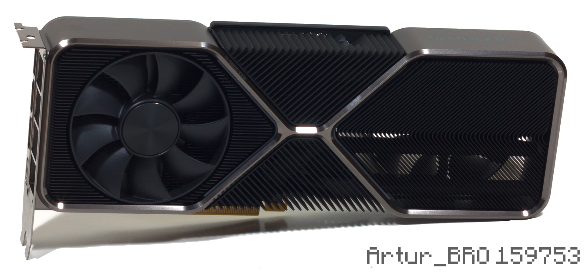
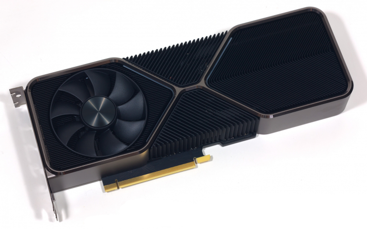
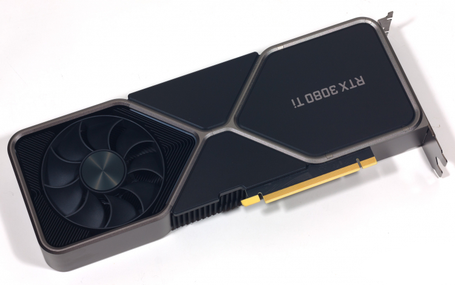
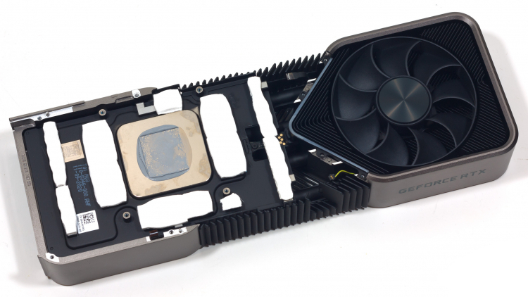
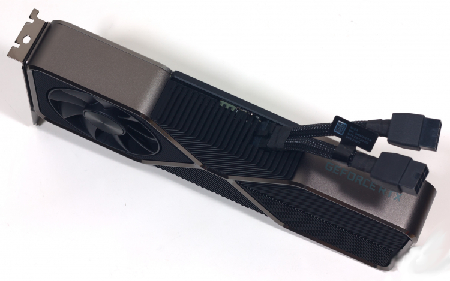
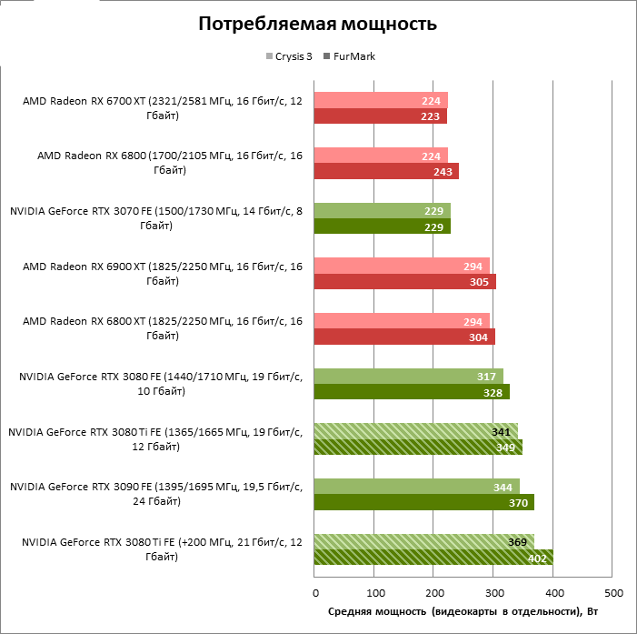
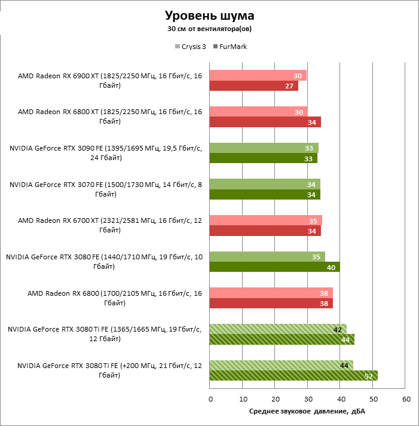
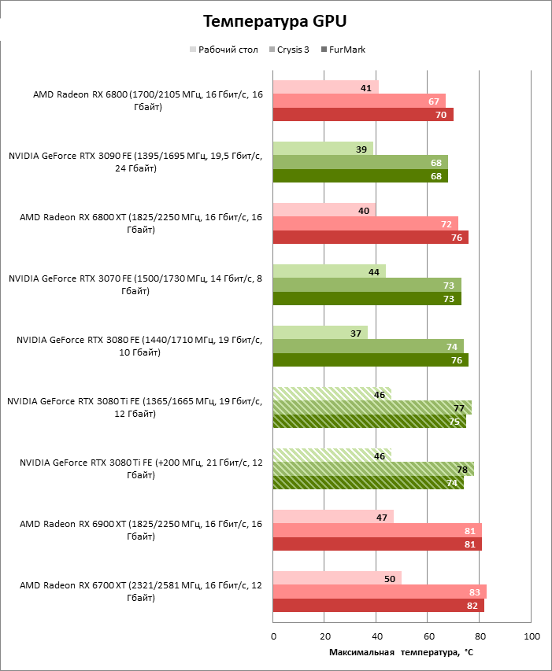

🔺🔻🔺🔻🔺🔻🔺
Scratch:
Сегодня мы знаем расширенные требования к Готэмские рыцариИ все стало только хуже. Если бы мы уже объявили, что в качестве минимального требования GeForce GTX 1660 Tiтеперь мы знаем, что рекомендуемые, чтобы играть в том же разрешениипротив та же цель FPS (60), но переход от низкого качества в Альтуисследование уже требует не меньше, чем GeForce RTX 2070. Будьте осторожны, требования к ЦП также увеличиваются, как и требуется удвоенный объем оперативной памяти.
Кроме того, версия для ПК будет включать в себя технологию Трассировка лучей Для отражений, поддержки сверхшироких мониторов, конфигураций с несколькими мониторами и в качестве технологии масштабирования у нас есть Intel XeSS и NVIDIA DLSS.
Уже при минимальных требованиях мы предупреждали, что игры могут быть достаточно оптимизированы, а именно, что самые мощные консоли нового поколения, PlayStation 5 и Xbox Series Xони согласятся перевести игру на разрешение 4K 30 кадров в секунду. Что еще хуже, он не включает в себя какой-либо режим производительности, в котором разрешение уменьшается за счет увеличения частоты обновления, чтобы обеспечить плавность, превышающую необходимую для игры такого типа.
В минимальных требованиях нет ничего удивительного, поскольку мы предполагали, что для этого потребуется процессор 6 ядер например, Intel Core i5-9600K с тактовой частотой 3,70 ГГц или AMD Ryzen 5 3600 с тактовой частотой 3,60 ГГц. Этот процессор должен сопровождаться 8 ГБ оперативной памятии видеокарта NVIDIA GeForce GTX 1660 Ти или AMD Радеон РХ 590. Все это для того, чтобы запустить игру в разрешении Full HD от 1920 х 1080 пикселей с частотой обновления 60 кадров в секунду и все это с Низким качеством графики.
ТАК: Виндовс 10 де 64 бит
Процессор: Intel Core i5-9600K (3,70 ГГц) или AMD Ryzen 5 3600 (3,60 ГГц)
Память: 8 ГБ оперативной памяти
Графика: NVIDIA GeForce GTX 1660 или AMD Radeon RX
DirectX: Версия 12 (DirectX 12)
Хранилище: 45 ГБ свободного места
В качестве рекомендуемых требований увеличивается спрос на 8-ядерный процессор, такой как Intel. Ядро i7-10700K или 6 ядер как AMD Райзен 5 5600Х. Это должно сопровождаться 16 ГБ оперативной памяти и видеокартой NVIDIA. GeForce RTX 2070 или AMD Радеон РХ 5700 ХТ.
С этими данными на руках страшно, так как ходят слухи, что графики Альто не самые высокие. Они все еще могут быть выше некоторые Ultra с технологией трассировки лучей. Если бы эти настройки включали трассировку лучей, это имело бы смысл, но если нет, оптимизация пугает.
Процессор: Intel Core i5-10700K (3,80 ГГц) или AMD Ryzen 5 5600 (3,50 ГГц)
Память: 16 ГБ оперативной памяти
Графика: NVIDIA GeForce RTX 2070 или AMD Radeon RX 5700 XT
Эксклюзивное преображение “Ночной сторож Джима Ли”
Костюм в стиле Beyond, вдохновленный вселенной Batman Beyond.
Спасенные предметы для создания нового снаряжения
модернизированное оборудование
специальный смайлик
3 наряда в эксклюзивных цветах
Ультра Зур-Эн-Арр
ледяной тон
Дань Arkham Asylum
Разговоры об усовершенствованных версиях топовых видеокарт GeForce 30-й серии (а именно RTX 3070 и RTX 3080) начались почти сразу же после того, как оригинальные устройства появились на рынке. Обычной практикой для чипмейкеров является то, что в первое время существования новой архитектуры GPU полностью функциональные кристаллы резервируются для профессиональных решений, а потребительские видеокарты оснащаются значительно урезанными графическими процессорами, которые в перспективе поддаются легкому апгрейду (не говоря уже о вариативности в объеме оперативной памяти), если к тому побуждает изменившаяся конкурентная обстановка.
Однако геймерские продукты NVIDIA, принадлежащие к высшему эшелону цены и быстродействия, сейчас не испытывают сильного давления со стороны «красных» конкурентов. AMD представила альтернативу всем моделям GeForce 30-й серии, за исключением RTX 3090, но, если бросить на чашу весов явное преимущество кремния Ampere в игровом рейтрейсинге (а также возможность использования DLSS для того, чтобы в любой момент повысить фреймрейт ценой несущественной потери качества изображения), ускорители NVIDIA изначально оказались в более выгодном положении по сравнению с аналогичными Radeon, когда состав обеих линеек устоялся. Тем не менее в NVIDIA решили, что подходящий момент для обновления настал. Ранее мы узнали о характеристиках GeForce RTX 3070 Ti и RTX 3080 Ti вместе с рекомендованными розничными ценами, и они вполне подтверждают миссию RTX 3080 Ti: это вовсе не замена оригинального продукта, а новая ступень модельного ряда с повышенной производительностью для тех, кто нашел возможности RTX 3080 недостаточно убедительным поводом отказаться от старого железа 10-го или 20-го поколения.
Говоря о ценах, мы уже не раз ошиблись, предполагая, что длительный дефицит полупроводниковых кристаллов по тем или иным причинам обойдет новинку стороной. NVIDIA приняла очередные меры для того, чтобы искусственно ограничить производительность Ti в операциях майнинга криптовалюты, но получится ли в этот раз обеспечить видеокартам широкую доступность, читатели узнают самостоятельно в ближайшие дни. А мы пока разберемся, что представляет собой GeForce RTX 3080 Ti с технической точки зрения и, главное, насколько велик рост быстродействия по сравнению с первым изданием RTX 3080. Следующий на очереди — RTX 3070 Ti, но вторая новинка NVIDIA задержится еще на неделю, ее дебют назначен на 9 июня.
Конфигурация оригинального GeForce RTX 3080 оставила хороший резерв для будущего пересмотра характеристик. В то время как полностью функциональный кристалл GA102 содержит 84 потоковых мультипроцессора (SM), RTX 3080 получил в свое распоряжение лишь 68 из них. В модификации Ti бюджет активных SM был увеличен до 80 штук, что равняется дополнительным 1 536 FP32-совместимым шейдерным ALU, 48 блокам наложения текстур и 16 ROP. Выходит, от старшей модели серии, RTX 3090, GeForce RTX 3080 Ti отделяют всего-то два активных потоковых мультипроцессора (или 256 CUDA-ядер стандартной точности).
Разумеется, настолько значительные изменения в характеристиках GPU не прошли бесследно для потребляемой мощности устройства. RTX 3080 Ti рассчитан на работу в пределах такого же TBP, как и RTX 3090, то есть целых 350 Вт. Тем не менее, хотя новинка уступает флагманской видеокарте числом действующих компонентов GPU, NVIDIА пришлось занизить проектные тактовые частоты по сравнению с исходными характеристиками RTX 3080 и RTX 3090: с 1 710 и 1 695 МГц соответственно до 1665 МГц. Boost Clock в спецификациях устройств NVIDIA представляет собой консервативную оценку, и тем не менее замеры в реальных условиях подтвердят, что определенный даунклокинг действительно имеет место. Похоже, между RTX 3080 Ti и RTX 3090 идет отбор по качеству кристаллов GA102, что выражается в большем удельном энергопотреблении чипов, предназначенных для RTX 3080 Ti, и, соответственно, пониженных тактовых частотах в рамках того же TBP. Тем не менее, если ориентироваться на паспортные спецификации, итоговый прирост теоретической пропускной способности по сравнению с RTX 3080 в операциях с плавающей запятой стандартной точности составил около 15 %, что потенциально транслируется в эквивалентное изменение игрового фреймрейта при максимальной нагрузке — в условиях высокого разрешения или трассировки лучей.
| Производитель NVIDIA | ||||||
|---|---|---|---|---|---|---|
| Модель | GeForce RTX 3060 | GeForce RTX 3060 Ti | GeForce RTX 3070 | GeForce RTX 3080 | GeForce RTX 3080 Ti | GeForce RTX 3090 |
| Графический процессор | ||||||
| Название | GA106 | GA104 | GA104 | GA102 | GA102 | GA102 |
| Микроархитектура | Ampere | Ampere | Ampere | Ampere | Ampere | Ampere |
| Техпроцесс | 8 нм (8N) | 8 нм (8N) | 8 нм (8N) | 8 нм (8N) | 8 нм (8N) | 8 нм (8N) |
| Число транзисторов, млн | 12 000 | 17 400 | 17 400 | 28 300 | 28 300 | 28 300 |
| Тактовая частота, МГц: Base Clock / Boost Clock | 1 320/1 777 | 1 410/1 665 | 1 500/1 725 | 1 440/1 710 | 1 365/1 665 | 1 395/1 695 |
| Шейдерные ALU FP32 | 3 584 | 4 864 | 5 888 | 8 704 | 10 240 | 10 496 |
| Блоки наложения текстур (TMU) | 112 | 152 | 184 | 272 | 320 | 328 |
| Блоки операций растеризации (ROP) | 48 | 80 | 96 | 96 | 112 | 112 |
| Тензорные ядра | 112 | 152 | 184 | 272 | 320 | 328 |
| RT-ядра | 28 | 38 | 46 | 68 | 80 | 82 |
| Оперативная память | ||||||
| Разрядность шины, бит | 192 | 256 | 256 | 320 | 384 | 384 |
| Тип микросхем | GDDR6 SGRAM | GDDR6 SGRAM | GDDR6 SGRAM | GDDR6X SGRAM | GDDR6X SGRAM | GDDR6X SGRAM |
| Тактовая частота, МГц (пропускная способность на контакт, Мбит/с) | 1 875 (15 000) | 1 750 (14 000) | 1 750 (14 000) | 1 188 (19 000) | 1 188 (19 000) | 1 219 (19 500) |
| Объем, Мбайт | 12 288 | 8 192 | 8 192 | 10 240 | 12 288 | 24 576 |
Для того чтобы дать усиленному графическому процессору адекватный канал связи с массивом внешней памяти, в строй ввели еще два 32-битных контроллера. Таким образом, GeForce RTX 3080 Ti располагает полной 384-битной шиной VRAM, как и RTX 3090, но вместо дорогих чипов GDDR6X, рассчитанных на скорость 21 Гбит/с, здесь используются микросхемы с номиналом 19 Гбит/с. Не менее важно то, что вместе с увеличенной ПСП RTX 3080 Ti достался еще один гигабайт локальной памяти. Таким образом разрешилась парадоксальная ситуация, когда младшая модель серии, RTX 3060, располагает большим объемом VRAM (12 Гбайт), чем все (за исключением RTX 3090) старшие. Что касается последнего, то при столь незначительной разнице в конфигурации GPU между RTX 3080 Ti и RTX 3090 единственным практическим преимуществом флагмана остается удвоенный комплект чипов GDDR6X (24 Гбайт). Однако лишь в рабочих приложениях, а не играх, подавляющее большинство которых вполне устроят и 12 Гбайт оперативной памяти.
И наконец, ответим на самый волнующий вопрос: «Почём?» GeForce RTX 3080 Ti оценили в $1 199 (или 116 990 в рублях), что на $500 превышает рекомендованную стоимость RTX 3080 и в точности соответствует стоимости RTX 2080 Ti Founders Edtion. Цена новинки, с одной стороны, служит подтверждением успеха предыдущей версии, по большому счету и не нуждающейся в обновлении, чтобы конкурировать со старшими моделями AMD 6000-й серии. С другой стороны, похоже на то, что NVIDIA признала аномальную рыночную ситуацию, которая сложилась из-за громадного спроса на компьютерные комплектующие и популярности криптовалютного майнинга. Оценка $1 199 выглядит реалистичнее любых чисел ниже тысячи долларов в то время, когда RTX 3080 уже сложно найти дешевле $2 500. Кроме того, стоит обратить внимание на изменившуюся лексику чипмейкера: в данном случае объявленная сумма является не рекомендованной розничной ценой в обычном понимании, а прогнозируемой минимальной отметкой.
Продажи GeForce RTX 3080 Ti начнутся завтра, во всем многообразии партнерских версий ускорителя. Однако базовый уровень производительности новинки, как обычно, продемонстрирует фирменная видеокарта NVIDIA. Если речь идет об оригинальном RTX 3080, конструкторы Founders Edition на отлично справились со своей задачей: компактный кулер необычной конструкции удивительно эффективно рассеивает прежде беспрецедентно высокий поток тепла в 320 Вт, сохраняя низкий уровень шума. Учитывая, что расчетная мощность RTX 3080 Ti уравнивает новинку с RTX 3090 (а ведь она еще и разгоняется!), мы ожидали увидеть такую же громадную систему охлаждения. Тем не менее NVIDIA не посчитала нужным что-либо менять в физическом исполнении RTX 3080, помимо незначительных косметических деталей — таких как отполированные фаски алюминиевой окантовки.
Систему охлаждения RTX 3080 Ti по-прежнему обслуживают два вентилятора с диаметром крыльчатки 85 мм. Вентилятор, смонтированный на лицевой стороне платы, извлекает нагретый воздух из компьютера через широкие просветы в крепежной панели. Второй радиатор установлен с противоположной стороны PCB и вращается в обратном направлении, а саму печатную плату уменьшили в размерах для того, чтобы обеспечить продув всей хвостовой части радиатора.
Кристалл графического процессора, чипы оперативной памяти и VRM на лицевой стороне PCB примыкают к основанию большой испарительной камеры, а сквозь оребрение радиатора проходят четыре теплотрубки. При этом две боковые секции радиатора изолированы друг от друга глухими перегородками так, чтобы каждый вентилятор развивал максимальное давление. Клиновидные блоки утолщенных ребер в середине между основными секциями предназначены для пассивного охлаждения путем конвекции в корпусе ПК.
Крышка на оборотной стороне печатной платы также выполняет функцию охлаждения лежащих под ней компонентов. Все видеокарты 30-серии под маркой Founders Edition используют оригинальный 12-контактный разъем дополнительного питания, рассчитанный на мощность вплоть до 300 Вт. Конкретные устройства различаются только переходником на 12-контактный штекер: у младших моделей он заканчивается одной стандартной 8-контактной розеткой, а у старших (включая, разумеется, RTX 3080 Ti) — двумя.
В отличие от применения упрощенной по сравнению с GeForce RTX 3090системы охлаждения, использование такой же, как у RTX 3080, печатной платы не должно стать потенциальной проблемой для Ti. Ведь существенные различия между PCB, лежащими в основе RTX 3080 и RTX 3090, сводятся к числу действующих фаз регуляторов напряжения, не считая, разумеется, дополнительных посадочных площадок под чипы оперативной памяти на обратной стороне флагманской модели.
Схема питания графического процессора GA102 подразумевает наличие отдельных VRM для основной и периферийной логики GPU. Первым VRM в Founders Edition управляют два ШИМ-контроллера: десятифазный чип MP2888B от Monolithic Power Systems и четырехфазный MP2884B того же производителя. Общее количество фаз первого регулятора равно 9 в GeForce RTX 3080 и 10 в RTX 3090, а периферийную часть GPU питают 6 фаз под управлением чипа MP2886B. В GeForce RTX 3080 Ti эта конфигурация изменилась довольно неожиданным образом: из VRM, обслуживающего вспомогательную логику графического процессора, изъяли одну фазу и прибавили к VRM более мощной, основной части. Оперативную память GDDR6X по-прежнему обслуживает трехфазный регулятор напряжения с контроллером UPI uS5650Q.

Сами фазы, как и раньше, укомплектованы силовыми каскадами MP86957 (также от Monolithic Power Systems) с внушительным запасом номинального тока — 70 А. Кроме того, в силу высокой плотности монтажа NVIDIA пришлось использовать в Founders Edition исключительно SMD-конденсаторы на входе и выходе силовых каскадов, однако преимущество SMD состоит не только в габаритах, но и, как правило, в лучших показателях ESR и ESI по сравнению с обычными «банками», что идет на пользу стабильности GPU при высоких тактовых частотах и столь большой потребляемой мощности.

| Тестовый стенд | |
|---|---|
| CPU | Intel Core i9-9900K (4,9 ГГц, 4,8 ГГц в AVX, фиксированная частота) |
| Материнская плата | ASUS MAXIMUS XI APEX |
| Оперативная память | G.Skill Trident Z RGB F4-3200C14D-16GTZR, 2 × 8 Гбайт (3200 МГц, CL14) |
| ПЗУ | Intel SSD 760p, 1024 Гбайт |
| Блок питания | Corsair AX1200i, 1200 Вт |
| Система охлаждения CPU | Corsair Hydro Series H115i |
| Корпус | CoolerMaster Test Bench V1.0 |
| Монитор | NEC EA244UHD |
| Операционная система | Windows 10 Pro x64 |
| ПО для GPU AMD | |
| Все видеокарты | AMD Radeon Software Adrenalin 2020 Edition 21.5.2 |
| ПО для GPU NVIDIA | |
| Все видеокарты | NVIDIA GeForce Game Ready Driver 466.54 |
По конфигурации графического процессора GeForce RTX 3080 Ti приближается к старшей модели серии, RTX 3090, и совершенно не удивительно, что новая видеокарта рассчитана на точно такой же резерв мощности, как флагман, — 350 Вт. Да и в действительности их энергопотребление расходится всего лишь на 3 Вт. Однако RTX 3090 достигает своей производительности не только за счет почти нетронутого кристалла GA102, но и за счет очень высоких для столь крупного GPU тактовых частот — почти 2 ГГц под нагрузкой. RTX 3080 Ti такими достижениями похвастаться не может (вероятно, в связи со сниженным качеством полупроводниковых кристаллов по сравнению с RTX 3090). В требовательных играх тактовая частота GPU на плате RTX 3080 Ti стабилизируется на уровне 1,8 ГГц — это ниже результатов базовой версии RTX 3080 (1,9 ГГц), но открывшиеся вычислительные ресурсы должны с лихвой компенсировать отставание.
Естественно, первым следствием апгрейда GeForce RTX 3080 до версии Ti после роста производительности стали совершенно иные требования к охлаждению видеокарты. Не зря фирменная реализация RTX 3090 собрана в громадном трехслотовом корпусе с массивной системой охлаждения, что позволило сделать из Founders Edition одну из самых тихих флагманских моделей на памяти 3DNews. Да и RTX 3080 в отношении шума лишь немногим хуже.
Про RTX 3080 Ti этого уже не скажешь. Чтобы сохранить температуру GPU на прежнем уровне, видеокарте Founders Edition приходится запускать вентиляторы СО на высоких оборотах, и в результате уровень шума даже в играх (не говоря уже о стресс-тесте FurMark или интенсивной расчетной нагрузке) навевает воспоминания о турбинном кулере GeForce GTX 1080 Ti.
Тем не менее, пусть и ценой сильного шума, плата Founders Edition обеспечивает графическому процессору адекватное охлаждение. С недавних пор API NVIDIA позволяет наблюдать не только за средней температурой кристалла GPU, но и за температурой самой горячей точки. Последняя в данном случае не превышает вполне приемлемых 84 °С. А вот оперативная память охлаждается похуже. Micron, единственный производитель GDDR6X, указывает 95 или 105 °C в качестве максимальной рабочей температуры различных чипов SGRAM данного стандарта. GeForce RTX 3080 Ti, работая на штатных тактовых частотах в открытом стенде, позволяет им нагреться до 96 °C.
Несмотря на то, что кулеру Founders Edition уже непросто справиться с возросшим тепловыделением GPU, нам удалось существенно разогнать видеокарту сверх референсных характеристик. BIOS допускает увеличение резерва мощности на 14 %, а сам графический процессор без труда набрал почти 250 МГц тактовой частоты под игровой нагрузкой. Оперативную память GDDR6X, в свою очередь, удалось разогнать до пропускной способности 21 Гбит/с (против штатных 19 Гбит/с).
В таких условиях общее энергопотребление видеокарты приближается к отметке 370 Вт в играх и выходит за пределы 400 в стресс-тесте. Разгон почти не повлиял на температуру кристалла GPU, но вот температура памяти уже достигла угрожающих 100 °С. Наконец, как и следовало ожидать, при разгоне вентиляторам системы охлаждения приходится вращаться еще быстрее и еще громче.
  Вычислительной мощности GeForce RTX 3080 Ti с избытком хватает для игр при разрешении 1080p с максимальными настройками графики без трассировки лучей. Даже в самых требовательных или попросту неподходящих для архитектуры NVIDIA проектах можно рассчитывать как минимум на 90 FPS средней кадровой частоты. А что касается соотношения производительности между новинкой и предыдущими моделями 30-й серии NVIDIA, то приставка Ti дала GeForce RTX 3080 дополнительные 9 % фреймрейта — это уже весьма недурно для игры в режиме 1080p, когда полностью загрузить GPU мешает скорость центрального процессора. В свою очередь, RTX 3090 способен увеличить быстродействие всего лишь на 4 % сверх достижений RTX 3080 Ti.
Среди конкурирующих видеокарт AMD полным аналогом RTX 3080 Ti по усредненным результатам бенчмарков является Radeon RX 6900 XT, хотя сегодня есть немало игр, предпочитающих ту или иную архитектуру графического процессора, так что отклонение результатов отдельных тестов от среднего значения в пользу ускорителя NVIDIA или AMD здесь весьма существенно. Перед следующим по старшинству продуктом AMD, Radeon RX 6800 XT, новинка NVIDIA демонстрирует небольшое преимущество в 4 % средней кадровой частоты.
В режиме 1440p по-прежнему нет ни одной игры, которая не покорилась бы GeForce RTX 3080 Ti. Хотя надо заметить, что избранные проекты — такие как Cyberpunk 2077 и Total War: THREE KINGDOMS — при максимальных настройках графики не оставляют большого запаса частоты смены кадров даже на самых мощных видеокартах, доступных геймерам сегодня.
При увеличенном разрешении экрана производительность центрального процессора уже не настолько сдерживает GPU, как в 1080p, что подчеркивает различия между соперничающими графическими ускорителями. По сравнению с GeForce RTX 3080 в его изначальном виде модификация Ti развивает на 11 % большую частоту смены кадров, а RTX 3090 , в свою очередь,опередил новинку на 6 % среднего фреймрейта.
Практически значимая разница между GeForce RTX 3080 Ti и флагманской видеокартой AMD, Radeon RX 6900 XT, по-прежнему отсутствует. К тому же разброс тестовых результатов между соперниками в различных играх стал меньше. А вот Radeon RX 6800 XT отстал от GeForce RTX 3080 Ti уже на 8 % усредненного фреймрейта.
Запросы игр в который раз обгоняют возможности потребительского железа, когда речь заходито производительности в режиме 4К. Даже если взять такую видеокарту, как GeForce RTX 3080 Ti, найдутся проекты, в которых невозможно достигнуть среднего фреймрейта на уровне 60 FPS при максимальных настройках детализации — например, пресловутый Cyberpunk 2077, Total War: THREE KINGDOMS, Watch Dogs: Legion и, наконец, Assassin’s Creed Valhalla (последняя игра оказалась в списке из-за лучшей оптимизации под чипы AMD, нежели NVIDIA). С другой стороны, все это значит, что лишь самым высокопроизводительным ускорителям дано приблизиться к комфортной частоте смены кадров в большинстве современных игр при разрешении 2160p, если не использовать средства масштабирования картинки, и дополнительное быстродействие здесь никогда не помешает. Апгрейд до версии Ti дал GeForce RTX 3080 еще 12 % среднего фреймрейта, а именно этого во многих случаях недоставало, чтобы перешагнуть через отметку 60 FPS. Впрочем, в 4К-бенчмарках и от GeForce RTX 3090 больше всего пользы: флагманская видеокарта NVIDIA обеспечивает дополнительные 7 % кадровой частоты.
Что касается решений на чипах архитектуры RDNA, то они, в отличие от своих предшественников, не начинают работать более эффективно вместе с ростом экранного разрешения. Напротив, в последних сравнительных тестах перед тем, как мы перейдем к разгону и трассировке лучей, Radeon RX 6900 XT отстал от GeForce RTX 3080 Ti на 8 % усредненного фреймрейта, хотя некоторые игры по-прежнему отдают предпочтение чипам AMD. А по сравнению с Radeon RX 6800 XT новинка ушла вперед уже на 17 % FPS.
Плата GeForce RTX 3080 Ti Founders Edition предоставила все условия для успешного разгона GPU и оперативной памяти, и результаты не заставили себя ждать. Благодаря оверклокингу средняя частота смены кадров в играх при разрешении 4К увеличилась на 10 %, и этого вполне достаточно для того, чтобы оставить позади GeForce RTX 3090, пусть и с мизерным преимуществом на стороне разогнанного RTX 3080 Ti.
Игры с рейтрейсингом наиболее эффективно используют вычислительные ресурсы GPU и, соответственно, лучше всего проявляют различия в производительности между теми или иными чипами. При разрешении от 1080p до 2160p обновленная версия GeForce RTX 3080 превосходит оригинал по средней кадровой частоте на величину от 11 до 14 %. В свою очередь, преимущество RTX 3090 перед новинкой составляет 6–7 % FPS. Ускорители на чипах AMD с логикой трассировки лучей первого поколения не являются конкурентами для RTX 3080 Ti. Даже в играх, использующих гибридную модель рендеринга, новинка опережает лучший из них (Radeon RX 6900 XT) на 46–57 % усредненного фреймрейта, а в полностью трассированной среде продукт NVIDIA продемонстрировал двукратное преимущество перед флагманом AMD.
GeForce RTX 3080 Ti обеспечивает средний фреймрейт не меньше 60 FPS даже в самых тяжелых играх с рейтрейсингом при разрешении 1080p и максимальных настойках графики. Кроме того, это единственное решение, помимо RTX 3090, которое в таких трудных случаях, как Watch Dogs: Legion, позволяет приблизиться к 60 FPS и при разрешении 1440p. В 4К, тем не менее, придется использовать масштабирование кадров при помощи DLSS (по меньшей мере в режиме Quality, а иной раз и Balanced), чтобы побороть тормоза.
Новый ускоритель NVIDIA развивает непревзойденную скорость рендеринга в Blender силами встроенного движка Cycles — на уровне GeForce RTX 3090. А при помощи блоков аппаратного рейтрейсинга, доступных через API OptiX, время экспорта можно сократить еще сильнее. Правда нужно иметь в виду, что только флагманская видеокарта справится с чрезвычайно сложными проектами, которые выходят за пределы 12 Гбайт локальной памяти RTX 3080 Ti.
Когда используется движок ProRender, ситуация меняется: видеокарты AMD на чипах Navi второго поколения по умолчанию используют аппаратную логику для навигации в структурах BVH, в то время как чипы NVIDIA лишены такой возможности. Тем не менее благодаря удвоенному комплекту FP32-совместимых CUDA-ядер GeForce RTX 3080 Ti удерживает паритет с Radeon RX 6800 XT и 6900 XT. Преимущество RTX 3090 в данном случае выражено сильнее всего.
Известно, что видеоредактор Premiere Pro лучше всего оптимизирован для работы на ускорителях NVIDIA. В итоге все верхние позиции графиков с результатами соответствующих бенчмарков оккупировали видеокарты 30-й серии. Любой из современных высокопроизводительных GPU обеспечивает фреймрейт, приближенный к 60 FPS, при воспроизведении 4К-проекта с использованием proxy, но в полном разрешении со сложными эффектами нет альтернативы таким продуктам, как RTX 3080 Ti или RTX 3090. Однако снова заметим, что, пусть в работе с 4К-исходниками RTX 3090 не имеет осязаемого преимущества перед новым RTX 3080 Ti, 8К уже нуждается в большем объеме локальной памяти ускорителя, нежели 12 Гбайт.
В тесте скорости рендеринга проекта Premiere Pro топовые модели NVIDIA также доминируют над родственными ускорителями попроще (GeForce RTX 3070) и любыми аналогами на чипах AMD.
Бенчмарк декодирования и дебайеринга видеозаписей RED R3D, который активно использует тензорные ядра графических процессоров Turing и Ampere, не видит различий между всеми участниками тестирования, которые обладают такими возможностями, — от GeForce RTX 3070 до RTX 3090. Однако он хорошо иллюстрирует, насколько аппаратный дебайеринг ускоряет обработку исходников R3D по сравнению с видеокартами без специализированной логики.
GeForce RTX 3080 Ti использует точно такой же аппаратный декодер видео стандартов H.264, HEVC, VP9 и AV1, как и другие видеокарты на чипах GA102 и GA104, а небольшой разброс тестовых результатов связан лишь с тактовыми частотами тех или иных моделей. В любом случае чипы NVIDIA развивают непревзойденную скорость декодирования любых форматов, за исключением H.264.
В задаче кодирования H.264 и HEVC преимущество железа NVIDIA перед предложениями AMD выражено еще лучше.
Nvidia — американская технологическая компания, разработчик графических процессоров и систем на чипе (SoC). Разработки компании получили распространение в индустрии видеоигр, сфере профессиональной визуализации, области высокопроизводительных вычислений и автомобильной промышленности, где бортовые компьютеры Nvidia используются в качестве основы для беспилотных автомобилей.
Основатели — Дженсен Хуанг, Крис Малаховски и Кёртис Прэм — приняли решение о создании компании в апреле 1993 года за обедом в Denny's в Сан-Хосе, штат Калифорния. Малаховски и Прэм работали инженерами в Sun Microsystems, но были недовольны избранным компанией направлением развития, Хуанг занимал одну из руководящих должностей в компании-производителе интегральных схем LSI Logic[en]. Они верили, что грядущий прорыв в компьютерной отрасли произойдёт благодаря аппаратному ускорению вычислений, слишком тяжёлых для процессоров общего назначения. Выбор в пользу разработки графических процессоров (GPU) был обусловлен стремительным ростом популярности видеоигр с трёхмерной графикой, который сулил большие прибыли производителям видеокарт. В их стартапе со стартовым капиталом в 40 тысяч долларов Хуанг стал президентом и главным исполнительным директором (CEO), Малаховски занял пост вице-президента по разработке, а Прэм — главного технического директора. Название партнёры придумали только накануне регистрации компании: оно было выбрано как производное от лат. invidia («зависть»), содержащего сочетание букв nv — сокращение от словосочетания next version («следующая версия»), которым предприниматели обозначали всю документацию по новому проекту.